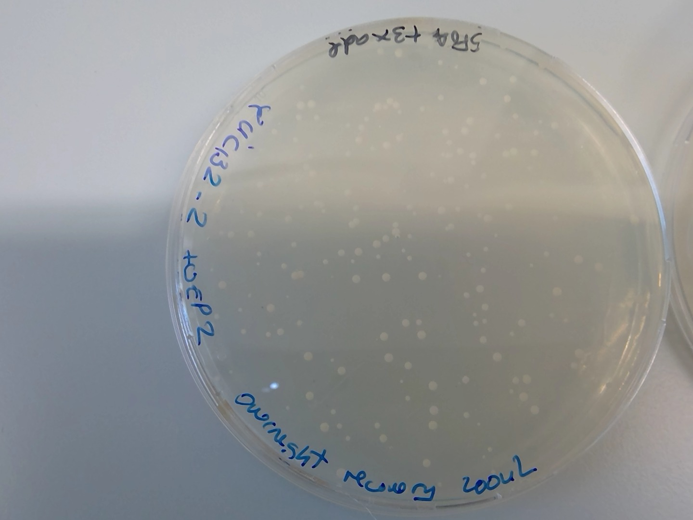
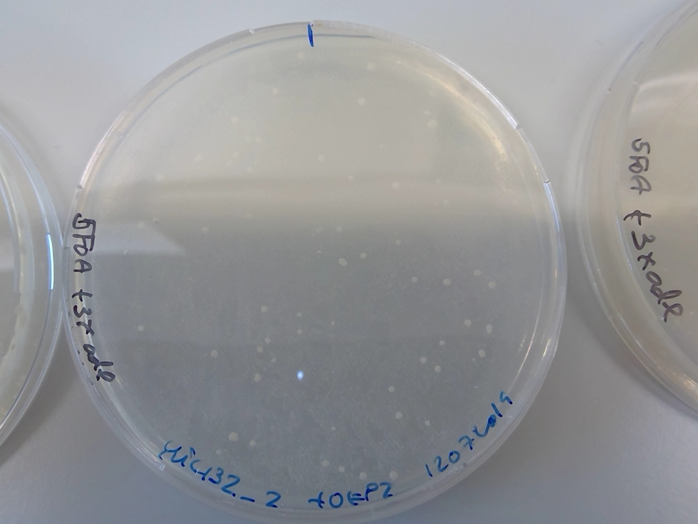
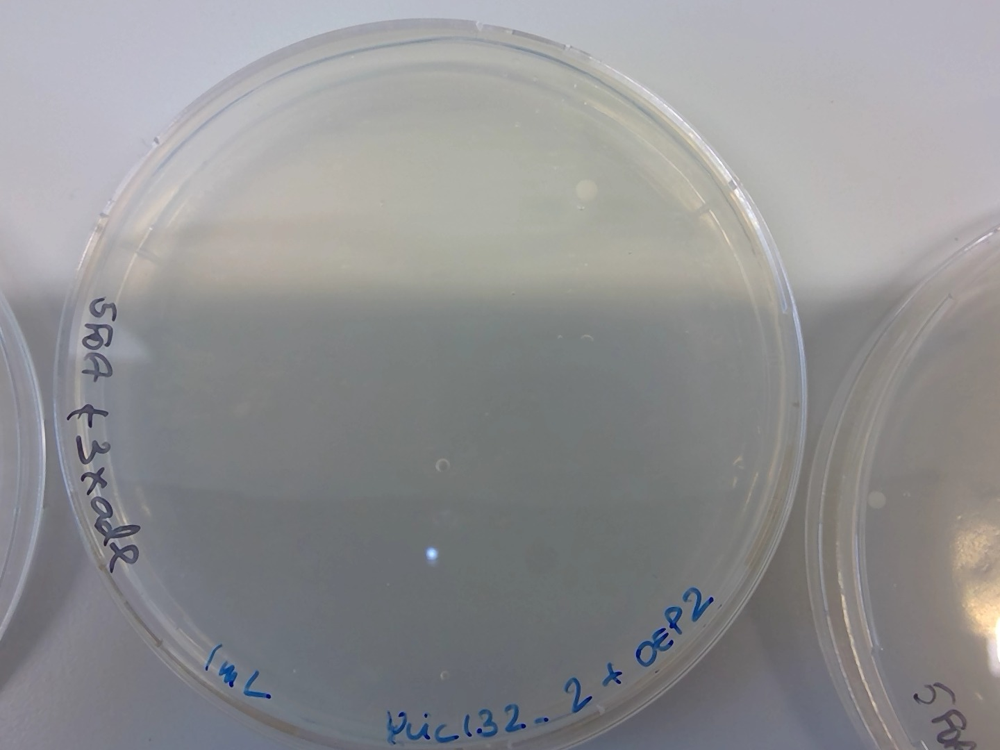
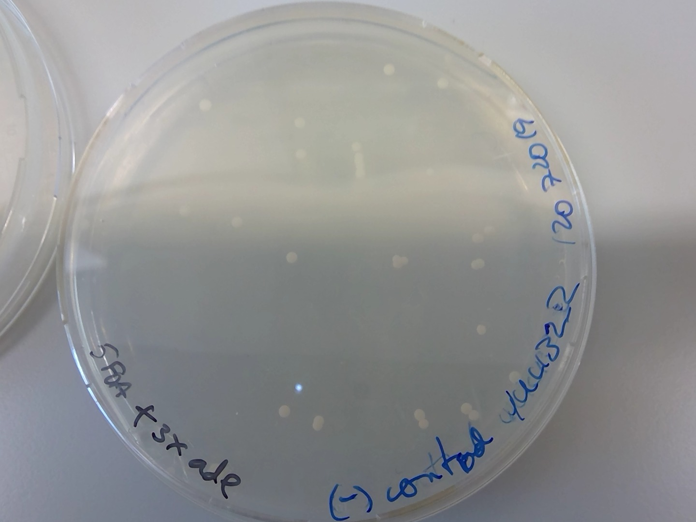
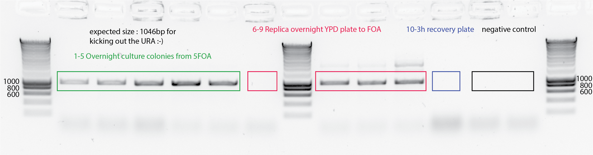

4. Title : 11072019-ylic132-1 and ylic132-2 transformation with the OEP2 :white_check_mark:¶
4.1. Date¶
11072019
4.2. Objective¶
To kickout the ura3 gene from the ade2 locus
4.3. Method and procedure¶
I inoculated 100ml of cells of both strains on Monday 08072019
On Wednesday morning (10072019) I diluted the saturated cultures 10^5x times, 1ul in 100ml YPD.
Next morning, 11072019, strangely, ylic132_1 was really dense with OD of 16 and ylic132_2 not dense at all, with OD=0.6 🤔
I diluted ylic132_1 , 80x to approximately OD of 0.2 and I didnt dilute ylic132_2, just add 2x ADE, which means 200ul of 1000x concentrated stock to a 100ml culture.
I had diluted again ylic132_2 50x because at 11:30 it was close to OD=1,2, so it seems the adenine speed up the growth. While ylic132_1 was just 0.252 , so I added 200ul 1000x ade to the culture.
at 13:15 the OD was 1.38 for ylic132_2 and 0.9 for ylic132_1.
after centrifugation I realized ylic132_1 was contaminated 😬 😩 because the supernatant was not completely clean as ylic132_2 and the pellet was kind of yellowish.
I used for all centrfugation steps 600g and 5 secs , and also I minimize the time in LiAc 0.1M.
I pipette in and out after adding every component of the transformation mix , NO VORTEX ☠️
4.4. Homology arms:¶
left homology arm: 252 bp
PCR of primer_1_new_upstream_forward and primer_7_upstream
right homology arm: 271 bp
PCR of primer_6_new_downstream_reverse_NO_Rga1 and primer_8_downstream
4.4.1. DNA concentration¶
I used 10ul of 336.8ng/ul OEP2 , so 3.36ug of DNA
4.4.2. Recovery Step - Essential for plating in selective 5FOA plates¶
In order to use the two options for recovery, namely, previous 2-4 hours incubation in 1ml YPD and then plating in 5FOA plates , and plating 200ul in YPD plates and incubating the rest in 30C overnight for plating on the next morning , and the ones in the YPD plate do replicate plating in 5FOA on next morning. I did:
After removing the transformation mix , resuspend the cells in 1mL YPD
Split 500ul to a new eppi, to have two eppies per recovery options
Add 500ul YPD to each eppi
Take 200ul for one of them and plate in YPD+3xade (60ul ade 1000x)
The rest ,2 tubes for ylic132_2+OEP2 and 2 tubes for negative control of ylic132_2 , are left in the 30C incubator, from 3:15pm.
At 5:30pm I took one of each tube and plate in 5FOA (I only have 3 5FOA plates.. so I think I can only plate the transformed cells 1mL) I need exactly 3 plates : one for after incubation, one for replica plate , and the other one for plating the rest of the overnight culture.
Next morning, I replica plated the YPD plate with a cell loan onto a 5FOA +3xade plate.
Plated from the overnight recovery culture of ylic132_2+OEP2, 800ul onto a new 5FOA +3x ade plate, to increase the chances of getting the right transformants.
Plate 800ul of ylic132_2 negative control onto another 5FOA+3xade I found in the 4C fridge.
Wait until 15072019, Monday, for the formation of colonies 🙏
4.4.3. Selection plates¶
5FOA plates + 3x ADE , in which only cells lacking URA3 are capable of grow. (positive control for the transformed cells)
4.5. Results -> I see colonies in 5FOA 😁¶
4.5.1. Overnight recovery in liquid culture¶

4.5.2. Replica plate from overnight YPD plate to 5FOA¶

4.5.3. 3 hours recovery (one colony)¶

4.5.4. Negative control - after overnight culture in YPD¶

4.6. Next steps¶
[x] Colony PCR
12 colonies in total: 5 from the overnight recovery, 4 from replica plating , the one from 3h recovery and 2 from the negative control.
Dissolving in 20ul MiliQ and replated in YPD
Using primers 22 (Primer 9 ADE Forward Check) and primers 23 (Primer 10 Reverse Check)
[x] DNA Gel to see check bands according URA presence or not. Length for not presence 1046bp and otherwise 2065bp. IT SEEMS I HAVE SOME RIGHT COLONIES 😁😁 
4.7. Conclusion¶
Definitely, the recovery step is essential to get transformed cells in 5FOA plates
Now I dont see , this egg like structure of the yellow cells concentrated in the center and pink cells around. I dropped the extra adenine at the edge of the plate, and not dropping in the center.
The most efficient one is the overnight recovery in liquid culture, in terms of amount of colonies.
4.8. Next steps:¶
Plating 8 colonies in -ade and -ura to check that they dont grow.
Overnight grow in liquid culture 1-5 for genomic prep.
PCR with primer 22 and primer 23
Gel to check backgrounds
Sequencing to see that the URA is not there.